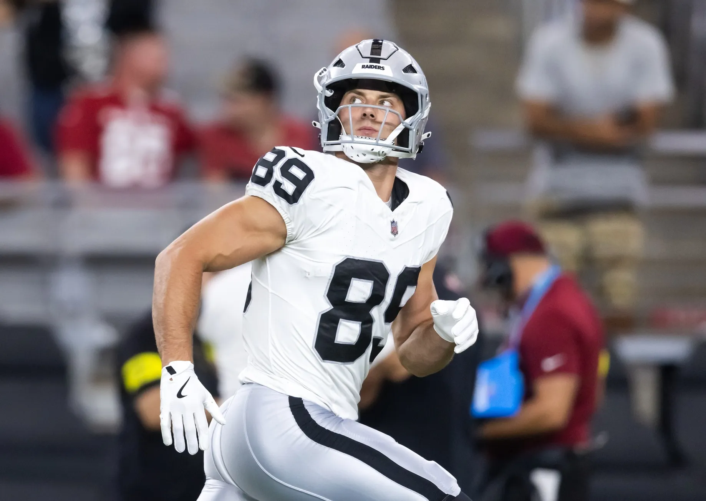
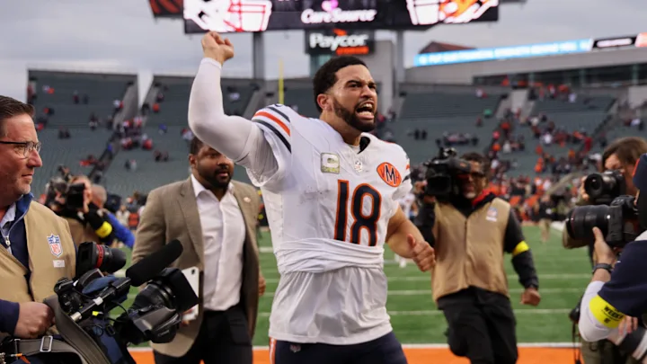
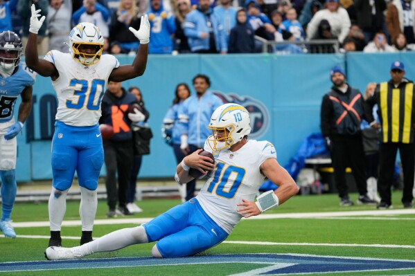
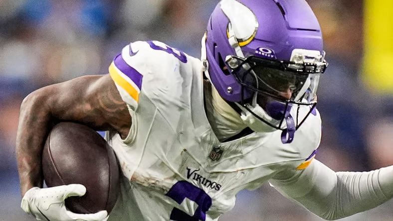
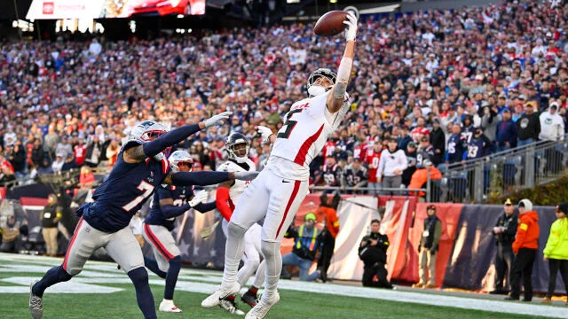
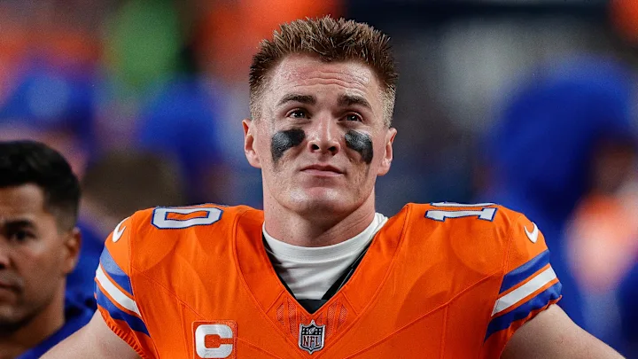
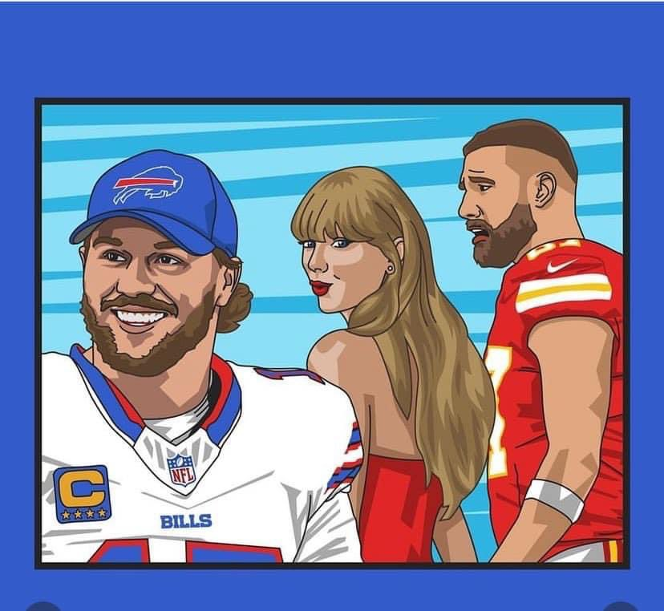
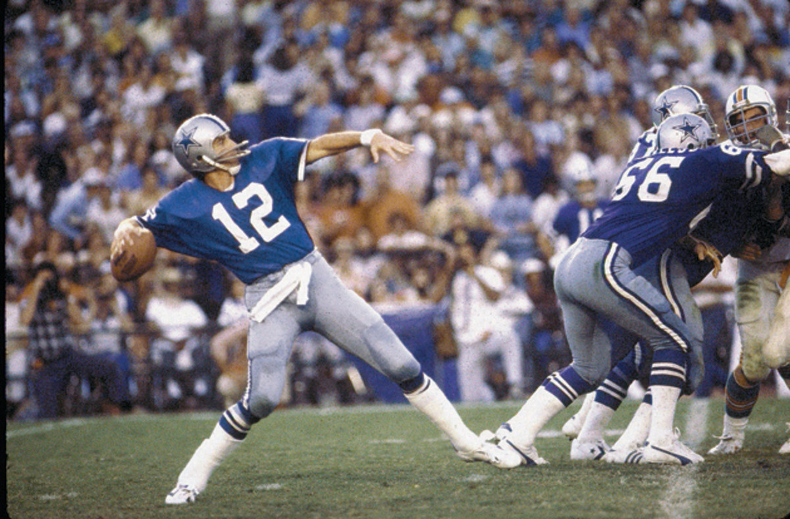

As we enter Week 10, there’s a clear cluster of teams, and the playoff picture is heating up. In the four previous years, since we’ve been on Sleeper only two teams with six losses have made the playoffs, so it’s put up or shut up time for the bottom cluster.
- 6-3: Kris, Neil, Andy
- 5-4: PJ, Jake, Joel
- 3-6: Seif, Tony, Pangy and CJ

Putting up… that’s exactly what Seif did last week, nearly hitting 200, propelled by Bowers’ 43.3, yeeeeeesh. His team’s healthy, and CMC has been unstoppable. Can he rattle off some W’s and stay in the mix? (hopefully not this week, though!)
Matchup of the Week Brother Bowl: Spitters not Quitters (6-3) vs. Turner 2-uh-4 (6-3) A little lame to repeated a matchup, but these guys deserve it, sitting at #1 and #3 in the standings. It doesn’t appear to be like a competitive matchup, but there’s a reason we lace ‘em up every week.
What to watch: * WR Glory - JSN (KT) and Nacua (AT) square off to see who is the ultimate WR1 * Pretty good TE matchup too, this could be where the game’s won or lost, with a couple of proven, but up and down guys in Kittle (KT) and Laporta (AT) * RB disparity - KJT trots out the best RB room with Taylor and Bijan, where Andy really hurts, starting Harvey and Monty, and already getting a dud out of Harvey (in the best game of the year!)
Waiver Wire Spice 🌶️ * Getting less spicy with less dollars, but… * Tony grabs the new WR1 in Las Vegas, Tre Tucker, for $8 * Joel chapped the shit out of my hide by snagging the Texans Defense for $6 - I literally went back through all transactions this year to see what the most someone had spent on a defense before making my $3 bid. He spent more.
1. Neil (6-3) ⬆️
PF: 1100.68, FAAB: $0, W6
Neil moves into the top spot, and it only took him winning six straight games and number seven looks locked up before it’s even started (sorry, Pangy). Great pick up last week with Monangai - could be someone that delivers down the stretch and into the playoffs, though we’ll see how it goes with Swift back this week.

2. Kris (6-3) ⬇️
PF: 1249.58, FAAB: $25, L1
Finally dethroned, but still looking very strong, leading PF by a bunch still. Should be interesting to see if Bijan and JT can be their normal selves in Germany… never know with these Euro games. Kris now has a legitimate question to ask each week as well, Caleb or Dak?

3. PJ (5-4) ↔️
PF: 1168.70, FAAB: $23, W3
Three straight weeks over 160 points has PJ into 2nd for PF. His team is getting stronger at the right time, with key pickups over the last few weeks, with Herbert, Dowdle, Kincaid and Pittman (oh, and Broncos D).

4. Andy (6-3) ⬆️
PF: 1054.48, FAAB: $0, W1
Andy pulled off a miracle on MNF, with CJ only needing 8pts from Aubrey, and having is lowest output of the season, and missing a FG (I mean, at least it was a 68-yarder). The cracks are starting to show this week as he sits on $0, with a sketchy lineup fielded… though those guys got some nice green matchups, like Addison against Baltimore’s Swiss Cheese D.

5. Jake (5-4) ⬆️ ⬆️
PF: 1121.82, FAAB: $39, W1
Nice showing after three straight duds. My team finally had their first London +Tee game, even though I had Tee on the bench. Let’s see if London can be a little more Hyde than Jekyll going forward, too. Excited to see Egbuka coming back after a nice rest, too.
6. Joel (5-4) ⬇️ ⬇️
PF: 1072.20, FAAB: $10, L1
Joel’s team is the only team to score more than 100 in every game. He’s also the only team to not score 140 in any week. That’s the kinda guy you take home to meet your parents.
7. Seif (3-6) ⬆️ ⬆️
PF: 1125.26, FAAB: $0, W1
Third in points for now, coming off the highest score of the year so far (197.26)… but I couldn’t thrust him higher than this, being two games back from everyone above. Last week he showed what he could do - let’s hope there’s not enough air to feed that flame each week. God it’s terrifying facing Lamar, CMC and Bowers, but glad Denver held Bowers in check to start the week.
8. Tony (3-6) ⬇️ ⬇️
PF: 1067.92, FAAB: $67, L1
Tony came back to earth after a couple of really nice weeks, with some pedestrian performances from BCM, Sutton, Tyler Warren and Daniels Jones. With no Chase this week, he’ll have a tough time against CJ, in bottom of the league jockeying. Slow start with Sutton’s 5.4, again.

9. CJ (3-6) ⬇️
PF: 976.72, FAAB: $52, L2
Well, at least Bo got CJ’s squad started slowly, too, with a measly 5.8 from TNF. He’ll also have to fill in for his Chiefs and his best player, Aubrey - that kicker spot could swing the game with Tony, as it looks pretty close right now.

10. Pangy (3-6) ↔️
PF: 887.44, FAAB: $10, L5
It’s still not going so great for Pangy, but I got a good feeling this week. His five game losing streak and Neil’s six game winning streak meet, and just like the NFL, weird stuff happens every week, so I think we’re in for a good one. I’d like one JA17 40-bomb on Neil’s head, please. Thank you.

“Winning isn’t getting ahead of others. It’s getting ahead of yourself.”
- Roger Staubach, Dallas Cowboys
Don’t beat yourself, fellas. Good luck to everyone besides Seif! - Jake 🐍